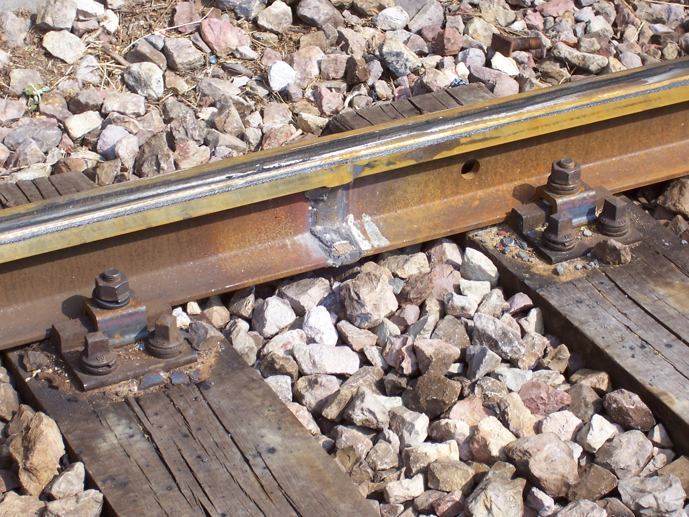
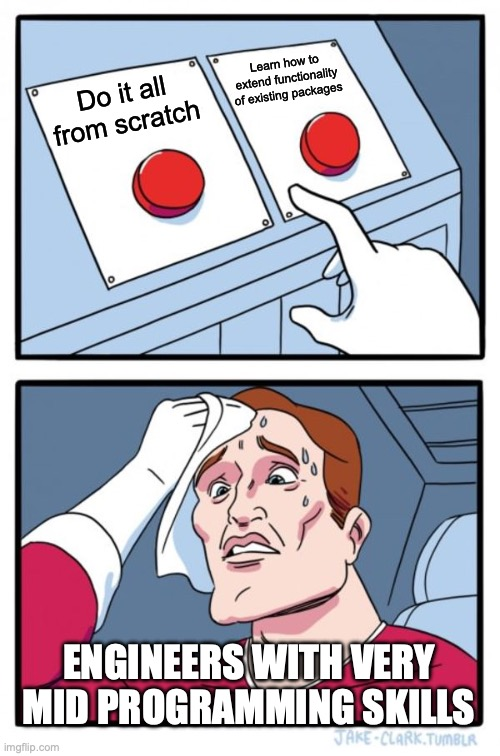
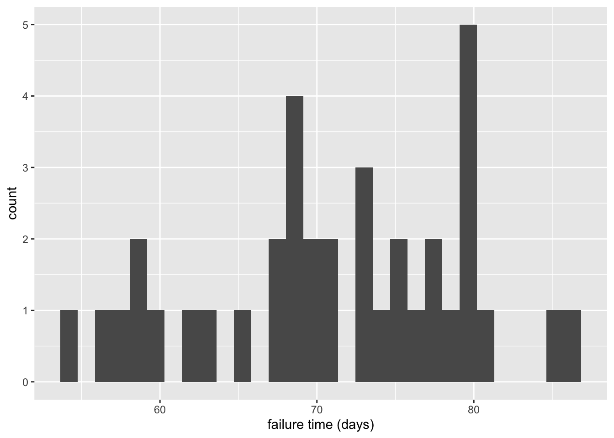
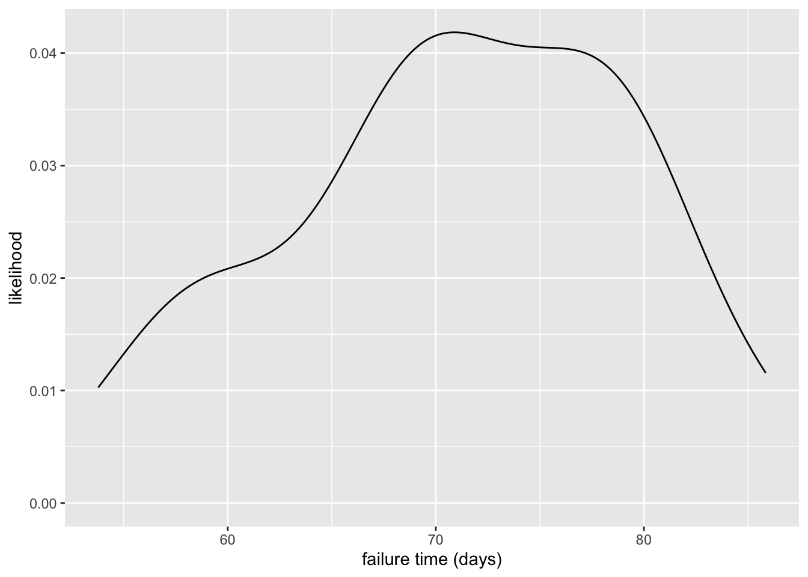
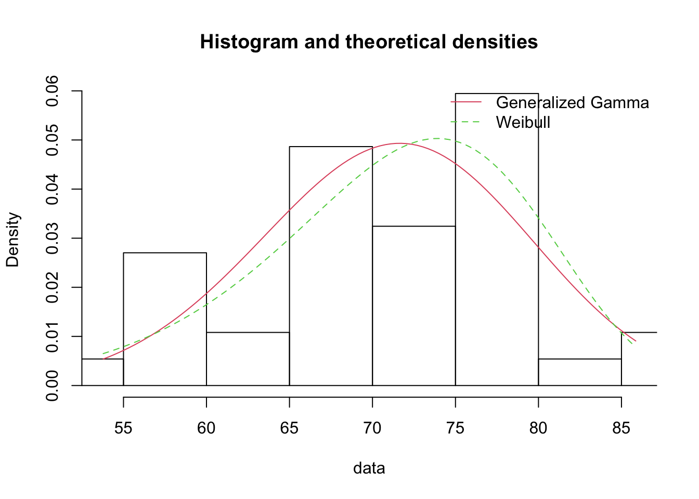
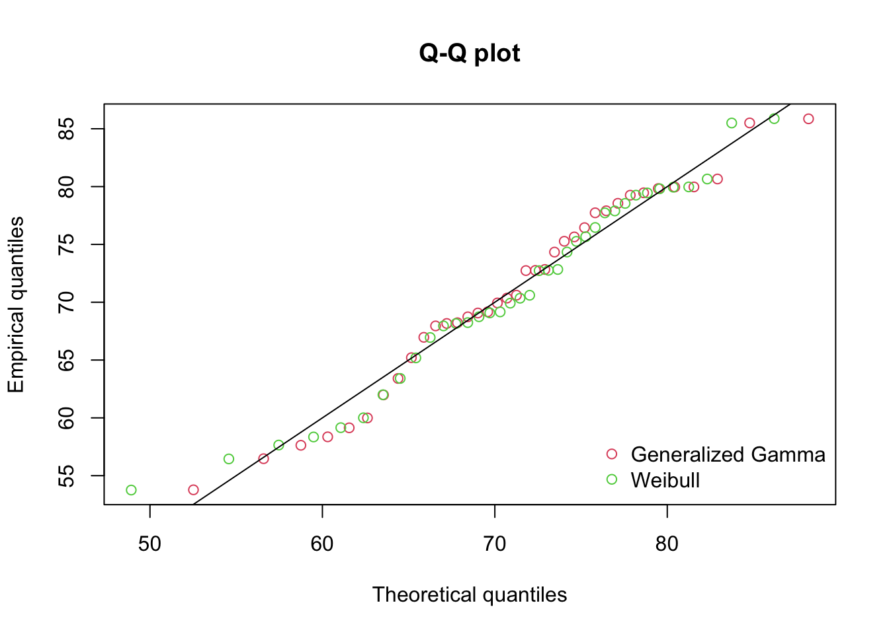
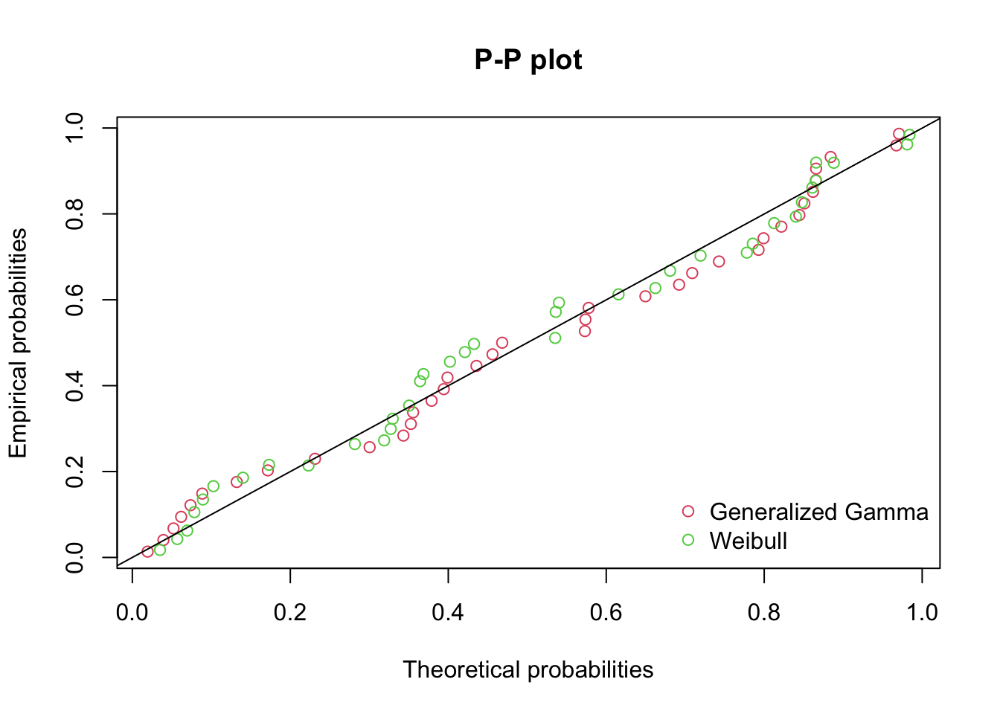
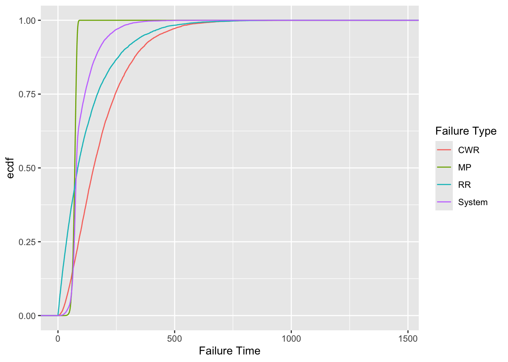
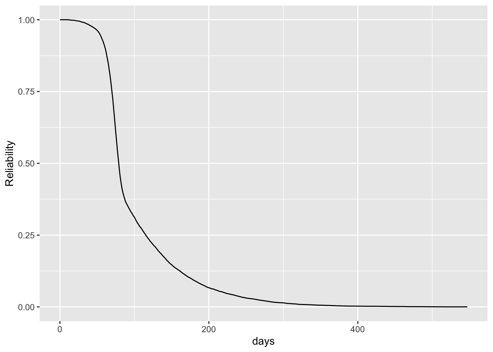

library(tidyverse)
library(knitr)
library(fitdistrplus)R6 Out-of-Library Distributions
14:540:384: Simulation Models in IE (Spring 2025)
Questions
Review
- Shown why we need simulations and a few practical examples
- Discussed where distributions come from, how to get them and how to use them
- Shown how to manipulate data and create visualizations
- Demonstrated two coding patterns for simulations
- Shown how
simmerprovides nautral abstractions to build models and handle the simulation part for us
1 Learning Objectives
- Model a system’s reliability
- Fit distributions to data
- Implement a custom distribution
- Simulate the failures and evaluate the reliabilty
2 Problem
fictional
New Jersey Transit is pushing Amtrak to increase its reliability from Trenton to Newark Penn Station. There is one specific track outside of Trenton which has a problematic spot due to the hydrology and subgrade geology which results in a few different failures. Any one failure will result in speed restrictions and slow operations, but the track will remain operational and the fault will not be addressed. If a second failure occurs, the track will be shut down and all faults will be repaired. Because these are frequent problems the maintenance crews are well prepared to repair the system overnight.
One option on the table is to shut down the track for a period of three months to make significant subgrade improvements which would effectively eliminate these failures. The chief would like to evaluate the costs associated with the current, intermittent repairs and costs to the systems vs. the cost to make improvements and the prolonged shutdown. She has asked you to estimate the number of failures to expect in 10 years, provide estimated reilability vs. time. Additionally, she would like to know the probability that the time between two failures is more than 6 months and the 25th-percentile system failure time.
2.1 Failure Modes
It is assumed that the modes of failure are independent. The three failures at this spot are:
Continuous Welded Rail (CWR) failure: The entire Northeast Corridor is a CWR system meaning each rail is welded to the next. The rail welds are considered ok if at most one out of four welds have failed. (The four welds being the two at both ends of both the left and rigth rails). Individual welds have failed more frequently here than most rail sections. An initial estimate is that they fail at exponentially distributed times of four times per year.
Railroad Ties. Timber railroad ties are used in this area because of the frequent overnight repairs. However they also wear out faster as they are susceptible to rot. The ties are replaced as needed. As a system of ~20 ties per section of rail, it is taken that the ties will degrade to the point of failure at exponentially distributed times with an average of three times per year in this location.
“Mud-pumping”: This occurs from the vibrations of the train over an area of track which has poor drainage. Over time, the ballast under the tracks gets compressed and pushed away until the rail and ties are “floating” above the ballast as a beam. This failure is progressive once it begins. However, the time between it beginning is not well studied. Data from the field has been collected and recent studies have suggested that the (Generalized Gamma Distribution)[https://en.wikipedia.org/wiki/Generalized_gamma_distribution] might offer an appropriate failure time distribution model.
2.2 Failure Mode (cont.)

3 Modeling this System
- Let’s draw a picture
- Explain your concept of the problem
- How does this system fail?
- How will you simulate it?
3.1 Load Packages
3.2 Failure Time Distributions
- Each weld fails at \(Exp\sim(4/year)\)
- We need the time until how many welds fail?
- How to model this?
n_failures <- 2
lambda_cwr <- 365/4
cwr <- function(n=1) {
rgamma(n, n_failures, rate=1/lambda_cwr)
}- The section of rail has an accepted exponentially distriubted failure times of 3/year
lambda_rrt <- 365/3
rrt <- function(n=1) {
rexp(n, rate=1/lambda_rrt)
}- degenerative failure
- failures are correlated to significant weather events, but these are also random
- once a fault begins, it progresses at an accelerated rate to failure
- we’ve been directed to compare a Generalized Gamma Distribution to other fits
- we’ll compare it against our trusty Weibull distribution
Two Distributions
Generalized Gamma pdf is given by Equation 1:
\[ f(t; \theta, \kappa, \delta) = \frac{(\delta/\theta^\kappa)t^{\kappa-1} e^{-(t/\theta)^\delta}}{\Gamma(\kappa/\delta)} \tag{1}\]
- Scale Parameter: \(\theta\)
- Shape Parameter: \(\kappa\)
- Power Parameter: \(\delta\)
And Weibull pdf is given by Equation 2:
\[ f(t; k, \lambda) = \frac{k}{\lambda}\left( \frac{t}{\lambda} \right)^{k-1} \tag{2}\]
- Scale parameter: \(\lambda\)
- Shape parameter: \(k\)
4 Fitting the Mud-Pumping distribution
How do you want to fit the specified distribution to the provided data?

fitdistrplus overview “Distributions not found in any package must be implemented by the user as d, p, q functions.”
4.1 Obtain Data
- create a
tibblearoundread_csvfunction to load the data as atibble - plotting a histogram and and a “smoothed” density plot for basic data inspection
mp_ft <- tibble(read_csv("mud-pumping-failure-times.csv"))
mp_ft |> ggplot(aes(x = failure_times_days)) +
geom_histogram() +
labs(
x = "failure time (days)",
y = "count"
)
mp_ft |> ggplot(aes(x = failure_times_days)) +
geom_density() +
labs(
x = "failure time (days)",
y = "likelihood"
)
4.2 Implement Method
Documentation indicates we need to provide:
- probability density function
d<functionname> - quantile function
q<functionname> - cumulative distribution function
p<functionname>
Our function name will be ggamma so we need dggamma, qggamma, pggamma
Must follow the same argument names as other distributions. For example see the normal distribution functions:
dnorm(x, mean = 0, sd = 1, log = FALSE)
pnorm(q, mean = 0, sd = 1, lower.tail = TRUE, log.p = FALSE)
qnorm(p, mean = 0, sd = 1, lower.tail = TRUE, log.p = FALSE)
rnorm(n, mean = 0, sd = 1)\[ \log(f(x) = \log(\delta) - \kappa \log(\theta) - \log \Gamma\left(\frac{\kappa}{\delta}\right) + (\kappa - 1) \log(x) - \left(\frac{x}{\theta}\right)^\delta \]
# Generalized Gamma PDF
# Generalized Gamma PDF
dggamma <- function(x, theta, kappa, delta, log = FALSE) {
# Handle zero-length input
if (length(x) == 0) return(numeric(0))
# Compute log-density
val <- log(delta) - kappa * log(theta) - lgamma(kappa / delta) +
(kappa - 1) * log(x) - (x / theta)^delta
if (log) return(val) else return(exp(val))
}
# Generalized Gamma CDF
pggamma <- function(q, theta, kappa, delta, log.p = FALSE) {
# Handle zero-length input
if (length(q) == 0) return(numeric(0))
# Corrected transformation
val <- pgamma((q / theta)^delta, shape = kappa / delta, scale = 1, log.p = log.p)
return(val)
}
# Generalized Gamma Quantile Function
qggamma <- function(p, theta, kappa, delta) {
# Handle zero-length input
if (length(p) == 0) return(numeric(0))
# Compute quantile
out <- theta * (qgamma(p, shape = kappa / delta, scale = 1)^(1 / delta))
return(out)
}4.3 Fit the Distributions
theta_start <- mean(mp_ft$failure_times_days) # Scale estimate
kappa_start <- (mean(mp_ft$failure_times_days)^2) / var(mp_ft$failure_times_days) # Shape estimate
delta_start <- 1 # Start with 1 and optimize
f_ggamma <- fitdist(
mp_ft$failure_times_days, "ggamma",
start = list(
theta = theta_start,
kappa = kappa_start,
delta = delta_start)
)
f_weibull <- fitdist(
mp_ft$failure_times_days,
"weibull"
)
plot.legend <- c("Generalized Gamma", "Weibull")4.4 Plot Results
Density Comparison
denscomp(list(f_ggamma, f_weibull), legendtext = plot.legend)
Quantile-Quantile Comparison
qqcomp(list(f_ggamma, f_weibull), legendtext = plot.legend)
CDF Comparison
cdfcomp(list(f_ggamma, f_weibull), legendtext = plot.legend)
Probability-Probability Comparison
ppcomp(list(f_ggamma, f_weibull), legendtext = plot.legend)
4.5 Select Evaluation Criteron
These diagnostic plots are helpful, but we need something more defensible
Various criteria found in course notes.
MSE, SSE, Likelihood, AIC, BIC all provided by
fitdistrplus.Pham’s Criteron (PC): Increase slightly the penalty each time adding parameters in the model when there is too small a sample. This is what we’ll use.
\[ PC = \left( \frac{n-k}{2} \right) \log \left(\frac{SSE}{n} \right) + k \left( \frac{n-1}{n-k} \right) \]
PC <- function(SSE, n, k) {
((n-k) / 2) * log(SSE/n) * k * ((n-1) / (n-k))
}- Number of samples, \(n\)
- Number of parameters, \(k\)
- Sum of Squared Error, \(SSE\)
Predicted Density Values
# n is number of observations
n <- length(mp_ft$failure_times_days)
# k is number of parameters
k_ggamma <- length(f_ggamma$estimate)
k_weibull <- length(f_weibull$estimate)
dens_ggamma_pred <- dggamma(
mp_ft$failure_times_days,
theta = f_ggamma$estimate["theta"],
kappa = f_ggamma$estimate["kappa"],
delta = f_ggamma$estimate["delta"]
)
dens_weibull_pred <- dweibull(
mp_ft$failure_times_days,
shape = f_weibull$estimate["shape"],
scale = f_weibull$estimate["scale"]
)Comparison to Emprical Densities
# Compute empirical density
dens_emp <- density(mp_ft$failure_times_days)
# Interpolate empirical density to match predicted values
empirical_vals <- approx(dens_emp$x, dens_emp$y, xout = mp_ft$failure_times_days, rule = 2)$y
# Compute Sum of Squared Errors (SSE) for generalized gamma
sse_ggamma <- sum((empirical_vals - dens_ggamma_pred)^2)
# Compute Sum of Squared Errors (SSE) for Weibull
sse_weibull <- sum((empirical_vals - dens_weibull_pred)^2)
# Evaluate PC for the two distributions
PC_ggamma <- PC(sse_ggamma, n, k_ggamma)
PC_weibull <- PC(sse_weibull, n, k_weibull)fitted_distributins <- list(f_ggamma, f_weibull)
summary_table <- sapply(fitted_distributins, function(fit) {
c(
"Number of Parameters" = as.integer(length(fit$estimate)), # Number of parameters
"Log-Likelihood" = fit$loglik, # Log-likelihood
"AIC" = fit$aic, # Akaike Information Criterion
"BIC" = fit$bic, # Bayesian Information Criterion
"SSE" = c(sse_ggamma, sse_weibull), # Sum of Squared Error
"PC" = c(PC_ggamma, PC_weibull) # Pham's Criteron
)
})
colnames(summary_table) <- c("Gen Gamma", "Weibull")
kable(summary_table)| Gen Gamma | Weibull | |
|---|---|---|
| Number of Parameters | 3.0000000 | 2.0000000 |
| Log-Likelihood | -137.4170474 | -139.2089430 |
| AIC | 280.8340948 | 282.4178861 |
| BIC | 285.6668485 | 285.6397219 |
| SSE1 | 0.0006254 | 0.0006254 |
| SSE2 | 0.0012547 | 0.0012547 |
| PC1 | -593.3529357 | -593.3529357 |
| PC2 | -370.5051397 | -370.5051397 |
Based on these results, we will go with the fit obtained with the Generalized Gamma distribution:
mp <- function(n=1) {
rweibull(n, shape=f_weibull$estimate["shape"], scale=f_weibull$estimate["scale"])
}5 Simulation
5.1 Options
- While-loop
- Sample batches of failure times
- Use
simmer
5.2 Implementation
- we have our distributions
- we can sample a set of each one and take the 2nd failure time as the system failure time
- putting this in a table we can easily obtain (simulated) empirical results to the questions asked by the boss
Running the Smulation
# number of scenarios
n <- 10000
rail_sim <- tibble(
scenario = 1:n,
CWR = cwr(n),
RR = rrt(n),
MP = mp(n)
)
rail_sim <- rail_sim |>
mutate(
# select only the last 3 columns (not "scenario")
System = apply(rail_sim[,2:4], 1, function(row) {
# sort the values
sorted_vals <- sort(row, decreasing = TRUE)
# select the second largest
sorted_vals[2]
})
)
kable(head(rail_sim))| scenario | CWR | RR | MP | System |
|---|---|---|---|---|
| 1 | 70.48656 | 60.92263 | 59.60360 | 60.92263 |
| 2 | 65.57012 | 26.23557 | 52.85921 | 52.85921 |
| 3 | 104.17335 | 245.35969 | 70.53094 | 104.17335 |
| 4 | 328.90866 | 218.42822 | 66.81366 | 218.42822 |
| 5 | 168.43899 | 70.14706 | 66.28540 | 70.14706 |
| 6 | 188.16816 | 219.08552 | 73.82546 | 188.16816 |
Pivot Data For Plotting
rail_sim_long <- rail_sim |> pivot_longer(
cols = -scenario,
names_to = "Failure Type",
values_to = "Failure Time"
)
kable(head(rail_sim_long))| scenario | Failure Type | Failure Time |
|---|---|---|
| 1 | CWR | 70.48656 |
| 1 | RR | 60.92263 |
| 1 | MP | 59.60360 |
| 1 | System | 60.92263 |
| 2 | CWR | 65.57012 |
| 2 | RR | 26.23557 |
rail_sim_long |> ggplot(aes(x=`Failure Time`, color=`Failure Type`)) +
stat_ecdf()
5.3 Required Metrics
# simply averaging the failure time of the system
mean_sys_ft <- mean(rail_sim$System)
# applying that to 10 years
number_fail_10yrs <- 10*365 / mean_sys_ft
# creating an empricial cumulative distribution function of the system failures
sys_ecdf <- ecdf(rail_sim$System)
# the probability of a failure being MORE than 180 days is 1 - ecdf(180)
p_6month <- 1 - sys_ecdf(180)
sys_ft_25thpercentile <- quantile(sys_ecdf, .25)From the simulation:
- The average failure time is 99.21 days.
- This will result in ~37 failures in 10 years.
- The probability of a failure occurring after more than 6 months is 9.4%.
- The 25th percentile system failure time is 65.4 days.
5.4 Reliability Estimation
- \(F(t)\) represents the probability of a failure occuring before time \(t\).
- Reliability \(R(t)\) is the probability the system is functioning at time, \(t\).
\[ R(t) = 1 - F(t) \]
# simply create a function which is 1 - the system ecdf computed at that time
R_sys <- function(t) {
1 - sys_ecdf(t)
}
# create a table
sys_rel_table <- tibble(
days = 0:(1.5*365),
Reliability = R_sys(days)
)
sys_rel_table |> ggplot(aes(x=days, y=Reliability)) +
geom_line()
- This is the estimated relability for the system
- It represents that from any given repair time, this is the probability it will be functioning \(x\) days from then.
6 Conclusion
Recap
- Parsed a complex problem into a simple framework
- Identified how appropriate distributions should be selected
- Demonstrated how to implement an “out-of-library” distribution
- Fit distributions to the data
- Built the model
- Ran simulation and extracted results
Future Considerations
- Test how our parameter estimates change the reliability curve
- Consider more complex system failure such as an interaction amongst the failure mechanisms
- Incorporate more distributions
- Ultimately a different entity will use the information provided to Go/No-Go major repairs